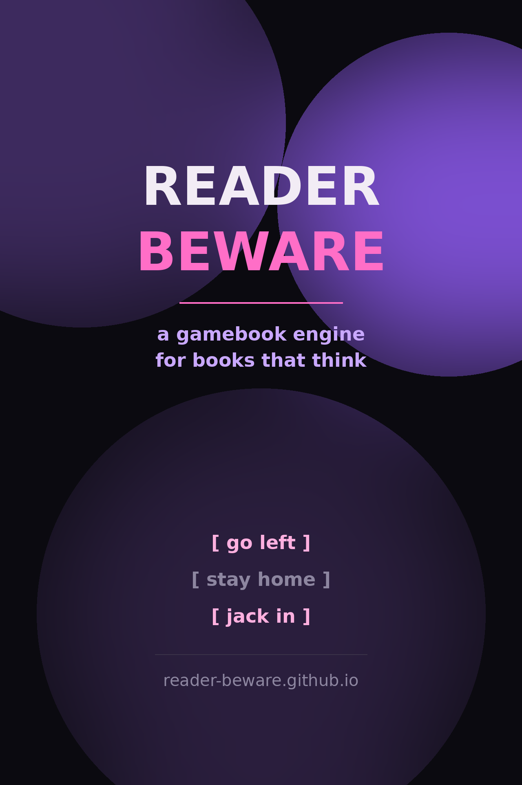

Branching gamebooks with state as deep as Twine, the soul of a printed novel, and output that is a real ebook file — epub and mobi, readable on any Kindle, reader app, or browser. No special software, no browser extensions, no proprietary runtime: just yaml, jinja2 and markdown compiled into a book.

Most interactive fiction tools make apps: Twine files need a player, ChoiceScript needs a runner. Reader Beware compiles your story into ordinary ebooks — every branch is a chapter, every choice a link — so the book opens in whatever you already use, from a Kindle at the beach to a phone offline, and it will outlive every browser on earth.
EPUB 3 packages (proper mimetype, spine, metadata, cover) and mobi via Calibre. No runtime required on the reader's side.
The choice filter carries world state into every
future section. Shirts, credits, dead dorks: the story remembers.
No new language to learn. Sections are markdown templated with jinja2; conditionals and loops come free from the template engine.
A narrative section can generate thousands of rooms: this site's maze book is one yaml file that compiled into 811 chapters.
jinja filters, markdown2 extensions, metadata and cover via a config file — register your own filters before the build runs.
beware serve gives you a flask web studio: cards per
section, link tools, live preview and autosave validation.
beware build-epub, opened on an e-reader: the red shirt chapter.A story is a yaml file of named sections. Each body is markdown
run through jinja2. Links to other sections are written with two filters:
explore (plain jump) and choice
(jump, and update the world state on the way).
# narative.yaml — a whole book --- entrypoint: body: | This is your opening page. [put on red shirt]({{ 'put-on-shirt'|choice(shirt_color='red') }}) [put on green shirt]({{ 'put-on-shirt'|choice(shirt_color='green') }}) put-on-shirt: body: | You put on the {{ shirt_color }} shirt. [And go outside]({{ 'go-outside'|explore }}) go-outside: body: | Outside you see Jane and she says "{% if shirt_color == 'green' %}I like your green shirt.{% else %}I dislike that colour on you.{% endif %}"
That's the whole surface. Each section+world pair becomes its own chapter of the ebook — so Jane really did say different things to the two readers.
entrypoint opens the book.beware build-html --narative-path narative.yaml --output output_folderbeware build-epub --narative-path narative.yaml --output book --book-config book.yaml writes a real book.epub (plus an unzipped debug folder).beware build-mobi … converts through Calibre's ebook-convert, or falls back to a Kindle-ready epub.beware build-html.The same build pipeline powers this website: every book linked below was
compiled by CI from a yaml file in site/examples-src/ — click a link, open your reader app, play.
shirt_color=green baked into its filename: Jane approves.beware serve --root stories/ starts a flask webapp that edits
stories as a stack of cards — one per section — with markdown toolbars, an
explore/choice link builder (autocomplete over your sections, quoted args done for you),
a links inspector, and a sandboxed live preview. Autosave validation flags missing
entrypoints or undefined targets while you type; ctrl+S writes canonical yaml.
# python 3.8+; linux tested, contributions welcome elsewhere pip install -e git+https://github.com/glassresistor/reader-beware.git#egg=reader-beware # or clone it and run the tests: green across python 3.8 through 3.13 git clone https://github.com/glassresistor/reader-beware.git cd reader-beware && pip install -e .[test] && pytest
This very page was built by GitHub Actions from the same pipeline:
tests, black formatting checks, package installs, book builds and every rendered
example on it — see the deploy.yml workflow. Reader beware indeed.